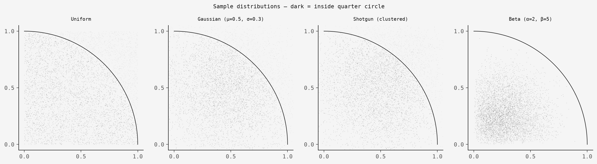
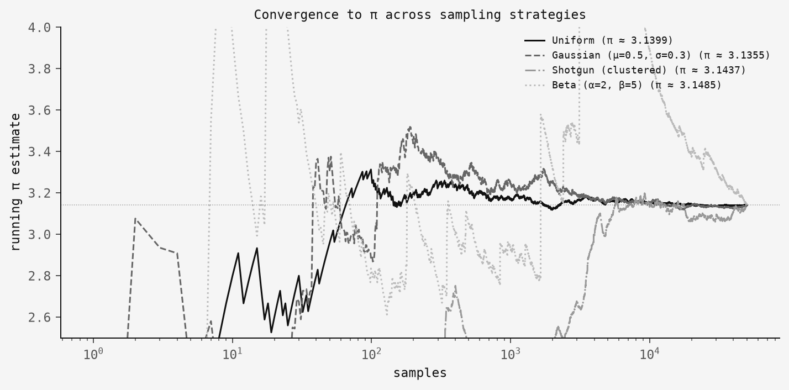
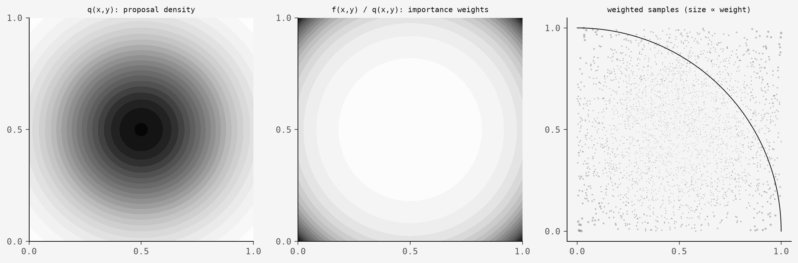

It's 2077 and civilisation has collapsed. You've barricaded yourself in an abandoned university library. You have a shotgun, a roll of aluminium foil and some half-remembered undergrad statistics. For some reason you need π. Maybe you're building a water wheel, maybe you just want something to do. The power has been out for years, so no computer. How do you get it?
This is more or less the setup of a 2014 paper by Dumoulin & Thouin that I love. They really did fire a Mossberg 500 at sheets of aluminium foil, then used the pellet holes to estimate π with Monte Carlo. Their answer was within 0.33% of the true value.
The shotgun is a good gimmick, but I like the paper more for the trick that makes it work, which is importance sampling. The usual "throw darts at a square" way of estimating π needs the darts to land uniformly, and shotgun pellets don't. Importance sampling is how you get around that, and it's useful far beyond firearms.
Here's the textbook method. Draw the unit square [0,1]² and put a quarter circle of radius 1 inside it, centred on the corner. The quarter circle has area π/4 and the square has area 1. Scatter N points uniformly over the square and count how many land inside the quarter circle. Then:
π ≈ 4 × (hits / N)
It's simple, and it works as long as the points really are uniform. If they come from some other distribution, like a shotgun spread, plain counting gives you the wrong number.
The trick is to notice that the π estimate is just an expected value:
π/4 = Ef[g(x)] = ∫ f(x) g(x) dx
Here f(x) is the uniform density on [0,1]², and g(x) is 1 if x is inside the quarter circle and 0 if it isn't. Multiply and divide by some other density q(x) and you get the same thing written differently:
π/4 = Eq[ g(x) · f(x) / q(x) ]
This holds for any q(x) that puts some probability everywhere on the unit square. The ratio f(x)/q(x) is a correction weight. Points from regions where q is dense count for less, and points from regions where q is sparse count for more. q can be a Gaussian, a Beta or an actual shotgun blast. You just need to know its density, or be able to estimate it.
I wrote a simulation (code.py) that estimates π with four different sampling distributions:
Uniform: the textbook version. Every weight is 1.
Gaussian (μ=0.5, σ=0.3): points bunch up in the
middle, and the weights correct for it.
Shotgun (clustered): simulated blasts, each with a
random aim point and a Gaussian spread of pellets around it. I
estimate the density with a 2D histogram, which is what the paper
did.
Beta (α=2, β=5): heavily skewed towards one corner,
so most of the points are nowhere near the edge of the quarter
circle.
This is what 50,000 samples from each one look like:

The four clouds look nothing alike, but after weighting they all give the same answer. Here's how the estimates converge:

They all end up at π. Uniform is the smoothest, since nothing needs correcting. Gaussian and Beta get there too but wobble a bit more, because the weights add variance. Beta is the risky one: its density drops to zero at the edges of the square, so the weights there have no upper bound and its variance is infinite. With another seed it can land well away from π. The shotgun is the noisiest of the four. Its density q(x) has to be estimated from the data, so there's uncertainty in the weights on top of the usual sampling noise.
Here's the Gaussian case broken down. The left panel is the proposal density q(x,y), with most of its mass in the middle. The middle panel shows the weights f(x)/q(x), which get bigger towards the edges. The right panel shows the samples with marker size scaled by weight:

The corner points are rare but heavy, and the centre points are common but light. Once you weight them, they act like a uniform sample, and that's what the π estimate needs.
The estimator only takes a few lines:
def estimate_pi_importance(x, y, q_x, q_y):
"""
f(x,y) = 1 on [0,1]² (target density)
q(x,y) = q_x * q_y (proposal density)
g(x,y) = 1 if x²+y² ≤ 1 (quarter circle indicator)
π ≈ 4 × (1/N) Σ g(xᵢ,yᵢ) / q(xᵢ,yᵢ)
"""
mask = (x >= 0) & (x <= 1) & (y >= 0) & (y <= 1)
g = (x[mask]**2 + y[mask]**2 <= 1.0).astype(float)
weights = 1.0 / (q_x[mask] * q_y[mask])
full = np.zeros_like(x)
full[mask] = g * weights
return 4.0 * full.mean()You pass in samples from any distribution, plus the density at each sample, and you get back π. The full script, with all four samplers, the figures and the convergence analysis, is in code.py.
The shotgun is the fun part, but the general idea is the reason to care. You almost never get to sample from the distribution you actually want. Importance sampling says that's OK: if you know how your samples are biased, you can undo the bias.
The shotgun was the hardest of the four because there's no formula for its density. I had to estimate q(x) from the pellet holes themselves with a 2D histogram, and then rescale it so that the weights inside the square average to the square's area. Without the rescale the estimate came out several percent off, because the histogram only sees the pellets that hit the square. The result is noisy, but it still converges.
So if civilisation does collapse, bring a shotgun, some foil and the importance sampling formula, and you'll have π within the hour.